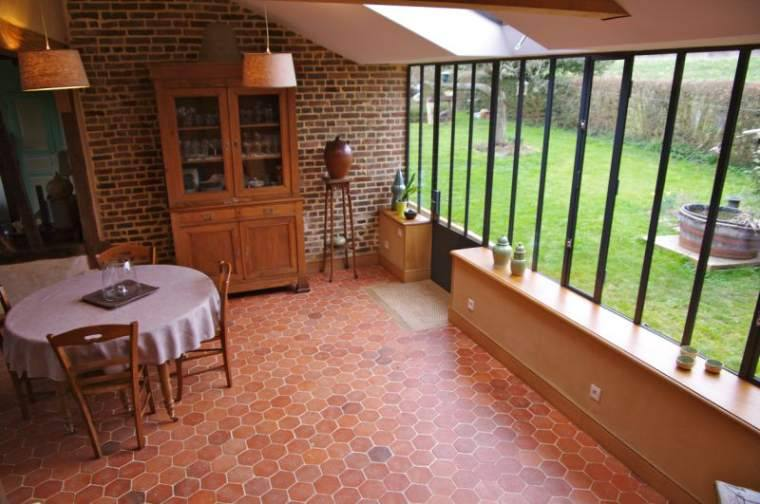
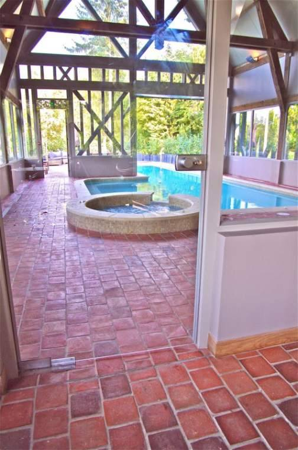
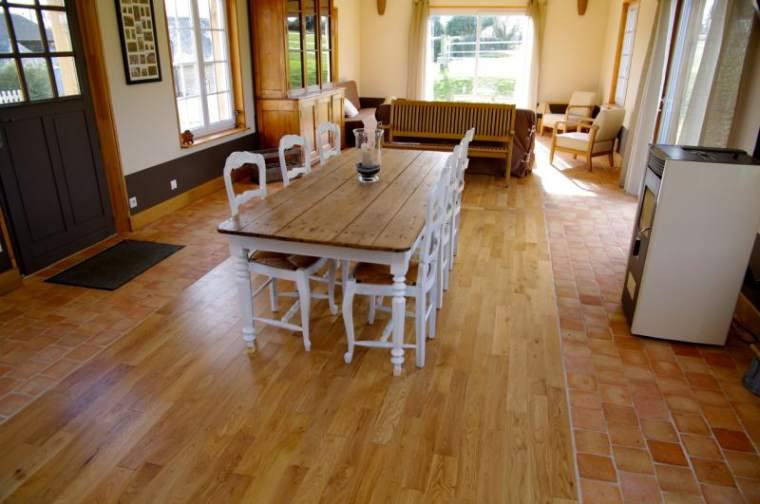
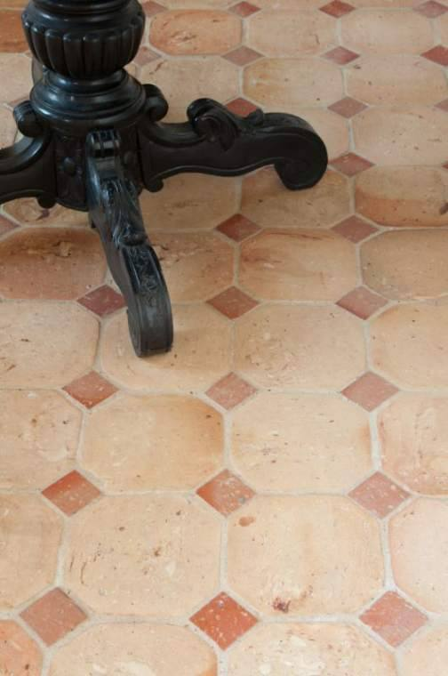
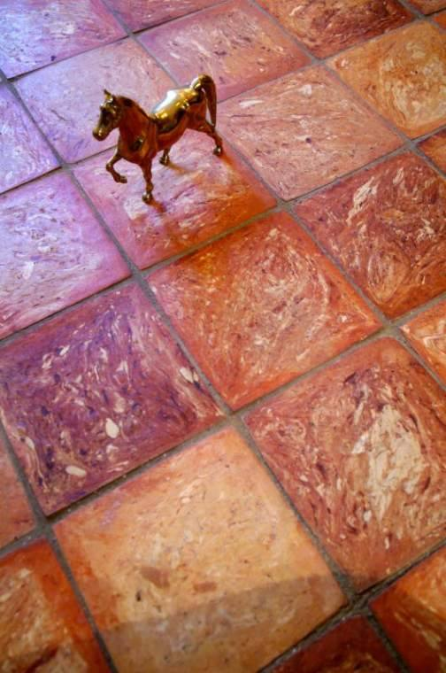
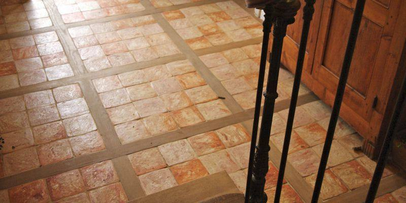

Saint Samson

Mercastel

Veines


Le Moulin
Carrelages de Saint Samson
4, rue de la Briqueterie
60220 Saint-Samson-la-Poterie, France
4, rue de la Briqueterie
60220 Saint-Samson-la-Poterie, France
03 44 82 74 69